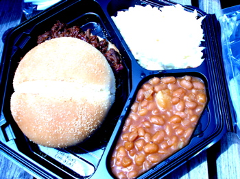

Take me out to the ball game
Today was a beautiful day for a baseball game and Poppy was invited to be a guest on KDKA’s Pirates Sunday, hosted by Rob Pratte. We both got passes to go to the broadcast booth at the ballpark, and once the show was over we had plenty of time to eat before the game started. I was starving because I hadn’t eaten breakfast before we left home this morning.
The kolbassi with grilled peppers and onions always smell appetizing and they taste good, but I’ve learned from experience that they give me indigestion and seem to linger in my system for at least 24 hours, so we headed for Manny Sanguillen’s barbeque stand, located along the river. I had thought that this was the only concession that was independent of Aramark, the corporate caterers who manage the rest of the food concessions at PNC Park, but upon further research it appears that Mr. Sanguillen runs his barbecue in partnership with Aramark somehow. At least it is unique to Pittsburgh, though, unlike most of the rest of the food available at the concession stands. By the way, for you young people, Manny Sanguillen was a catcher for the Pirates during the 1970s, known for swinging at almost any pitch, and thus, while hitting his fair share of runs, drew almost no walks. He had his brief moment in the sun when he pinch-hit a single in the 9th inning of the second game of the 1979 World Series, scoring Ed Ott and winning the game to break the 2-2 tie. The Pirates, of course, went on the win the Series that year. Manny can often be found at the concession stand, sitting in a big leather chair, greeting fans and signing autographs.

Manny’s offers a limited menu of beef brisket, pulled pork, and grilled hamburgers; you can get all three as sandwiches by themselves or as platters with baked beans and cole slaw. I think the beans are pretty tasty, with barbecue flavorings and chunks of bacon in them. And I like to get the cole slaw on the platter and add it to the bun as I’m eating my sandwich. My only dilemma comes when I try to choose whether to get the beef or pork; they’re both really good. Today I got the brisket. Here’s me trying to keep the wind from blowing my hair into my mouth.
If only the game had been as good as the food. We watched Oliver Perez pitch 3 1/2 abysmal innings, lasting for what seemed like 3 hours. I said to Poppy, “What’s the opposite of a nail-biter?” His reply, “A snoozer.” Which is what we had, a snoozer and a loser, even when they took Perez out and put Vogelsong in, although he didn’t do too badly and the game sped up at that point. We had won the last 2 against the Phillies and some foolish and optimistic fans had brought brooms with them to the ballpark, indicating their hopes for a sweep. I guess at some point they just quietly put their brooms down and left them there…
Comments
You look glamorous even when you’re eating a brisket sandwich at the baseball stadium during a game that Pittsburgh lost.
Wow! Now that’s what I call great options at the ballpark! I wish we had something like that selection available here in Toronto. It’s pretty much icky fast food and gross stuff.
And by the way I agree with Leland, you look great!
My husband is from western Pennsylvania and so is a Pirates and Steelers fan which seems to involve lots of disappointment.
It looks like you made the best of the disappointing circumstances. And Leland is right, you do look glamorous.
Sigh. The Pirates.
But it is a beautiful ballpark, with a stunner of a view.It’s been a couple of years since I’ve been to a game at all. When my daughter was small we had a day game plan and went all the time.
I love slaw on my barbeque too.
Julie and Ivonne, you ladies are sweet, but that photo made me realize that I need to chop several inches at least off my hair!
Lindy, day games are still a lot of fun; you should play hooky from work some afternoon this summer and go—the Pirates have a lot of them scheduled this year. And with the way they’re playing, good seats are always available!
Read up on Pirate history before making a statement about Manny’s brief moment in the sun. Manny was an outstanding player for the Bucs for several years (3 All Star appearances) and was an important component of their 1971 World Series Championship. His hit in the 1979 series, although important, was at the end of his stellar career.
Lynn—I certainly meant no disrespect to Manny, who as you say was an outstanding player and a fine human being, although I do think All Star teams tend to reflect popularity rather than true talent. In the post I was more focused on the barbecue and in trying to sum up his career in a sentence or two perhaps emphasized the wrong things; sorry to offend a Manny Sanguillen fan!
Add a comment